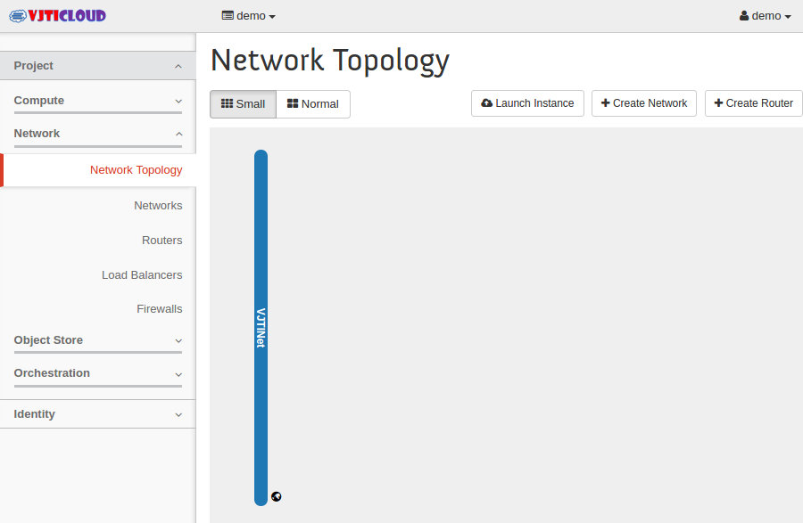
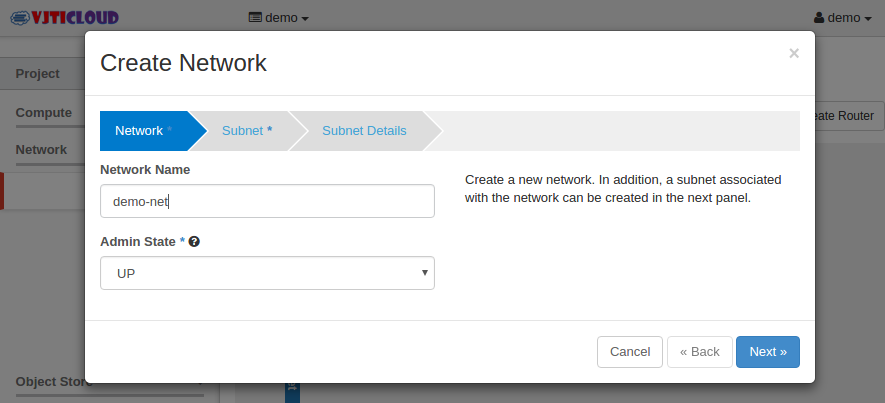
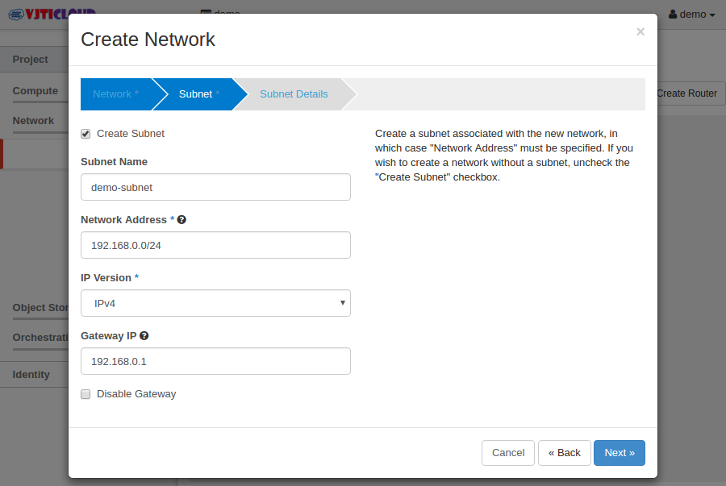
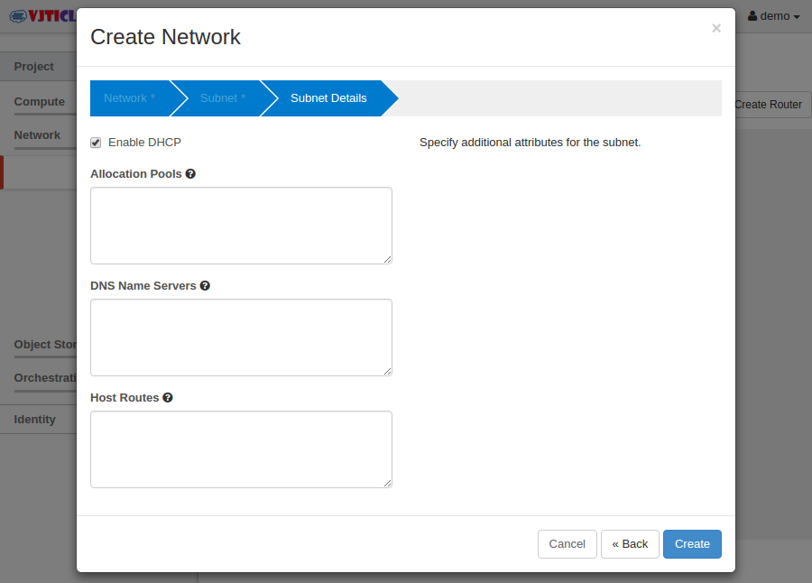
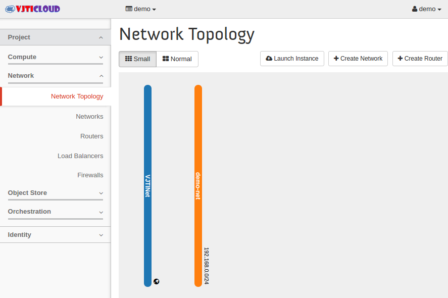
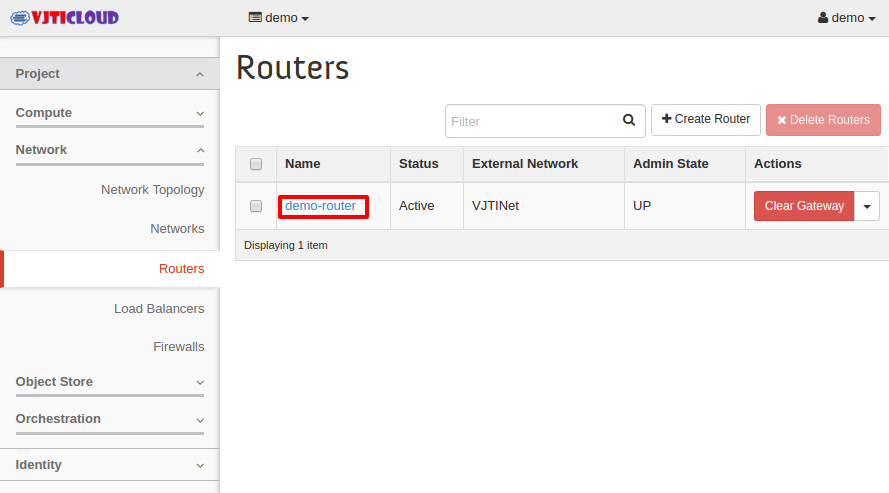
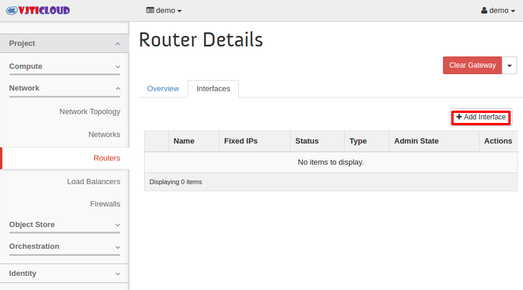
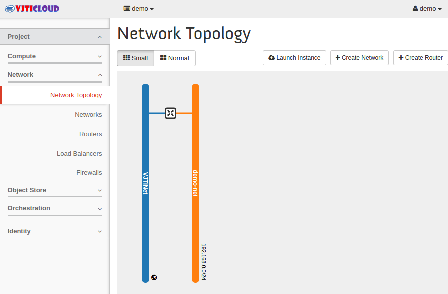

Create Network, Subnet and router¶
Login to Openstack Dashboard as normal user (demo).

Navigate to Network. Select Network Topology or Networks.
Click on “Create Network”. Enter the Network name and set Admin State UP. Click next
Set the options Subnet Name, Network Address(CIDR Format), IP Version and Gateway IP. Click next
Set additional details as per your requirement or leave blank. Click create.
Once you have created Network, Network topology will look like below.
Click on “Create router”. Enter Router Name, set Admin State UP and External Network VJTINet.

Navigate to Routers. Click on the router you just created.
Select the “Interfaces” tab and click on “Add Interface”.
Select “Subnet”, IP Address for router interface(Optional). Click on Add Interface.

Final Network Topology will look like below.

{kind=link}
{kind=link}
{kind=link}
{kind=link}
{kind=link}
{kind=link}
{kind=link}
{kind=link}
Create security group & configure the rules¶
Navigate to Access & Security. Select the tab called “Security Groups”.
Click on “Create Security group”. Enter the name and description for the security group.
Once the group has been created successfully, Click on “Manage Rules”.

Click on “Add Rule”.
Allow ssh from anywhere to the instances (SSH).
Similarly , allow “ping” as well to this host from anywhere (ALL ICMP).
Once you have added those rules to the security group, it will look like below.
{kind=link}
{kind=link}
{kind=link}
{kind=link}
{kind=link}
{kind=link}
Create key-pair¶
To access the instance without password.
Navigate to security & access. Click the tab called “Key Pairs” and click on “Create key Pair”.
Enter the Key pair name. (Keep Some meaning full name). Click on “Create key Pair”.
The key pair will be automatically downloaded to your laptop. If it didn’t download, click the link to download it. Keep the key safe since you can’t download it again.
{kind=link}
{kind=link}
{kind=link}
Launch an instance¶
Click on “Launch Instance ” button.
Set the instance details like below.
Availability Zone – nova . (Need to select your compute node).
Instance Name – Enter the desired instance name
Flavour – Select the available flavour according to your need. (See the details in right side)
Instance Count – Enter the instance Count
Boot Source – Select boot from pre-defined image.
Image Name – select “cirros” since its very small Linux foot print for testing openstack.
Click on Access & security tab for the instance. From the drop down box, select the key pair “demo-key” which we have created earlier. Also select the security group which we have created.

Click on Networking tab, Select network by clicking on + sign.
You can customise your instance after it has launched using the Post Creation (optional) option. Following is a example script to set password to user in Ubuntu Server and centOS cloud images.
#cloud-config password: mypassword chpasswd: { expire: False } ssh_pwauth: TrueSpecify Advanced options (optional) to use when launching an instance. Click “Launch” to launch the new instance.
Here you can see that instance has been launched. It will take few seconds/minutes to boot the instance depends on the image size which we have selected.
If you would like to see the instance console, click the instance name and select the console tab. You should be able to access the instance here as well by double clicking the console bar.
You can also check the log to know the instance is booted or not. (If console is not working)
Assign floating ip to an instance so we can access it from external network.

Add Floating IP from pool of IP addresses.
Allocate IP.
Associate to your VM.
You can see floating IP in instance table.
Now you can SSH into your VM using following.
{kind=link}
{kind=link}
{kind=link}
{kind=link}
{kind=link}
{kind=link}
{kind=link}
{kind=link}
{kind=link}
{kind=link}
ssh -i key.pem username@floating-ip-of-VM
for example
ssh -i demo-key.pem cirros@172.18.38.140